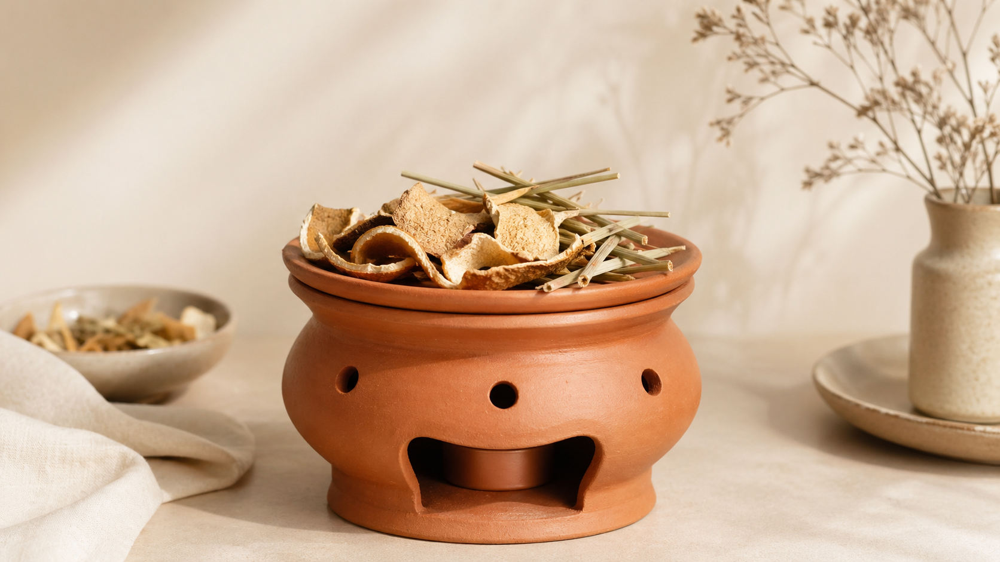
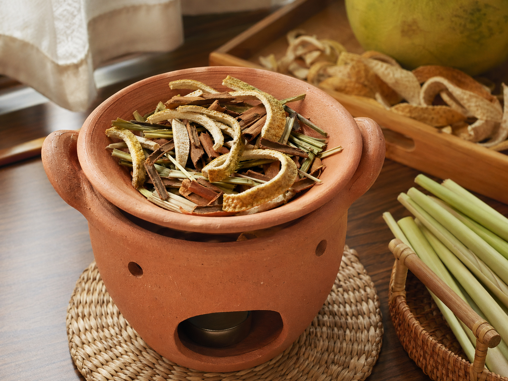
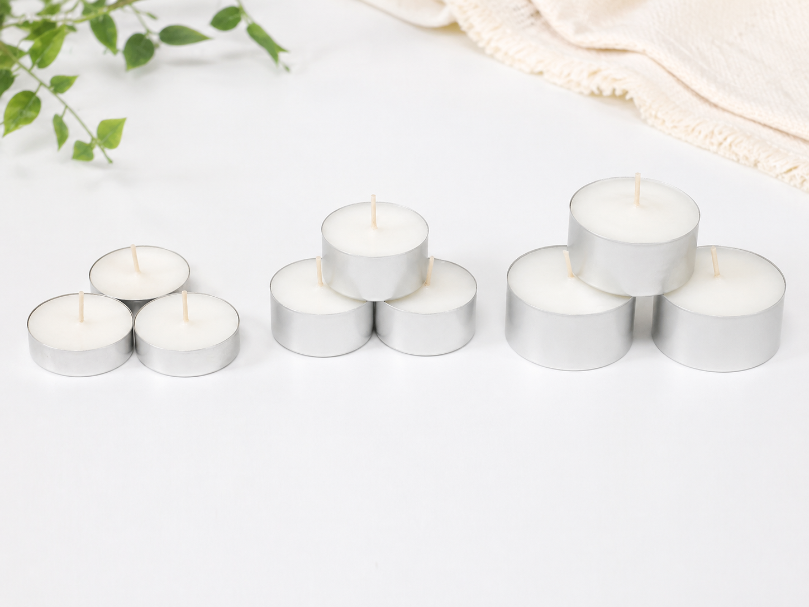
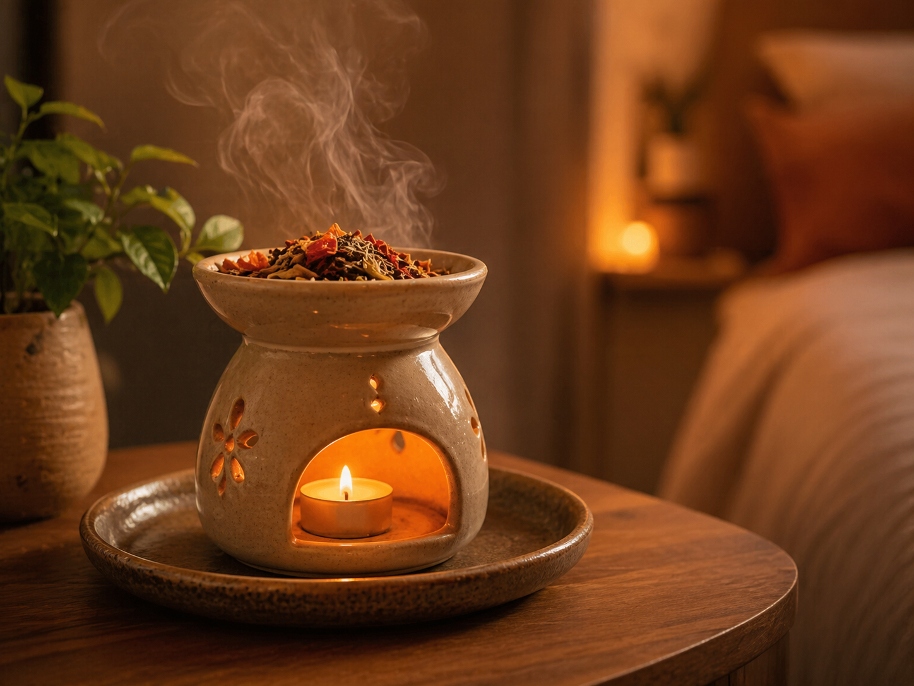
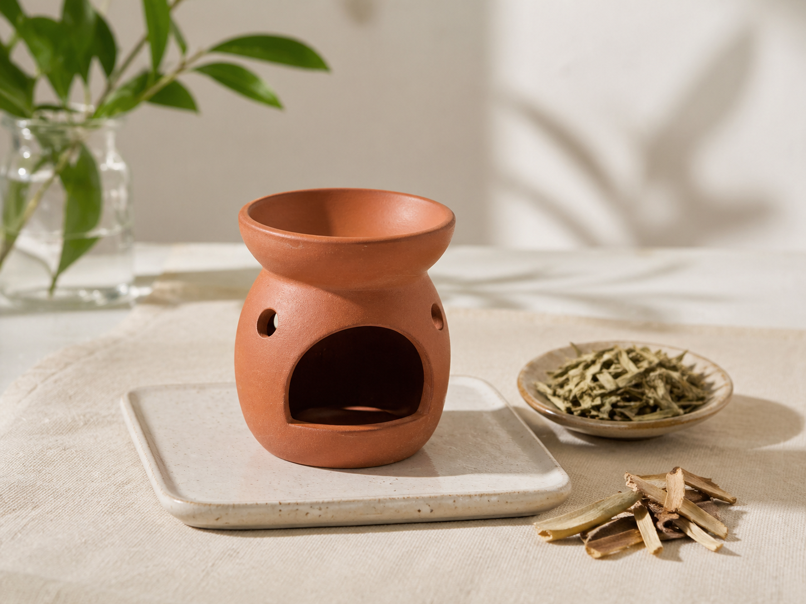

Hướng Dẫn Dùng Bếp Xông Thảo Mộc Đúng Cách, An Toàn | Nến Phương Lâm

Phòng ngủ có mùi nồm ẩm sau mưa dài? Không gian sống thiếu hương thơm dễ chịu để thư giãn sau giờ làm? Bếp xông thảo mộc chính là giải pháp đơn giản mà hiệu quả mà nhiều gia đình Việt đang tìm đến. Không cần điện, không hóa chất — chỉ cần một bếp xông thảo mộc đất nung cùng vài loại thảo mộc tự nhiên và một cây nến tealight nhỏ là đủ để cả không gian lan tỏa hương thơm trong lành. Bài viết này hướng dẫn bạn cách dùng bếp xông thảo mộc đúng cách, an toàn và kết hợp nguyên liệu hiệu quả nhất.
1. Tại sao nên dùng bếp xông thảo mộc thay vì các thiết bị khác?
Trên thị trường hiện nay có nhiều lựa chọn để khuếch tán hương thơm vào không gian sống: đèn xông tinh dầu điện, máy phun sương, hoặc nhang truyền thống. Thế nhưng bếp xông thảo mộc lại có những ưu điểm riêng mà không thiết bị nào thay thế được.
Thứ nhất, bếp hoạt động hoàn toàn bằng nhiệt từ nến — không cần điện, không dây nhợ, dễ dàng đặt ở bất kỳ góc nào trong nhà: bàn thờ, góc thiền, phòng ngủ hay không gian yoga. Thứ hai, hơi nóng của bếp kích thích tinh dầu tự nhiên trong thảo mộc bốc lên từ từ, tạo ra hương thơm thuần thảo mộc — không cháy khét, không mùi nhân tạo. Đây là trải nghiệm khác hoàn toàn so với nhang hay nến thơm thông thường.
Nhiều khách hàng của Nến Phương Lâm dùng bếp xông để khử mùi nấm mốc trong nhà vào mùa mưa, hoặc để tạo không khí ấm cúng trong những buổi tối thư giãn. Nhu cầu xông thảo mộc tự nhiên tại nhà ngày càng tăng, đặc biệt trong cộng đồng yêu thích lối sống xanh và lành mạnh.

2. Cách kết hợp bếp xông thảo mộc với nến tealight và nguyên liệu tự nhiên
2.1. Chọn nến phù hợp để đốt bếp xông
Đây là bước quan trọng nhất mà nhiều người bỏ qua. Bếp xông thảo mộc hoạt động dựa trên nhiệt tỏa đều và ổn định — vì vậy loại nến bạn dùng ảnh hưởng trực tiếp đến hiệu quả xông và độ bền của bếp.
- Nến tealight 4h: Lý tưởng nhất cho một buổi xông thảo mộc tiêu chuẩn (30–60 phút). Ngọn lửa ổn định, đủ nhiệt để kích thích tinh dầu trong thảo mộc bốc hơi đều mà không làm cháy khét. Đây là lựa chọn phổ biến nhất trong combo nến tealight Nến Phương Lâm.
- Nến tealight 2h: Phù hợp khi bạn chỉ muốn xông nhẹ, tạo hương thơm trong phòng trước khi đi ngủ.
- Tránh dùng nến to hoặc nến cây: Ngọn lửa quá lớn làm bếp đất nung nóng đột ngột, dễ nứt hoặc làm cháy thảo mộc trước khi tinh dầu kịp lan tỏa.
Thay vì dùng bật lửa thông thường, hãy thử phụ kiện thắp nến bằng điện có thể sạc — mồi nến nhanh, không bị bỏng tay khi thao tác trong không gian bếp xông nhỏ gọn.

2.2. Các loại thảo mộc tự nhiên phù hợp và cách dùng từng bước
Gần như mọi thứ trong bếp nhà bạn đều có thể dùng để xông thảo mộc. Dưới đây là những nguyên liệu phổ biến và công dụng nổi bật:
- Vỏ bưởi, vỏ cam: Hương thơm tươi mát, nhẹ nhàng — phù hợp cho phòng khách hoặc không gian làm việc.
- Sả, gừng: Hương ấm, có tính kháng khuẩn nhẹ — tốt cho phòng ngủ vào mùa mưa ẩm.
- Bồ kết: Khử mùi mạnh, thanh lọc không khí hiệu quả, truyền thống lâu đời trong văn hóa người Việt.
- Quế, đinh hương, hoa hồi: Hương nồng ấm, tạo cảm giác ấm cúng, phù hợp cho góc thiền định hoặc thờ cúng.
Các bước sử dụng bếp xông thảo mộc đúng cách:
- Đặt bếp xông trên mặt phẳng chịu nhiệt, tránh xa rèm hoặc vật liệu dễ cháy.
- Cho một lượng thảo mộc vừa phải lên mặt bếp — tạo khoảng trống để hơi nóng lan tỏa đều.
- Đốt nến tealight, đặt vào ngăn bên dưới bếp.
- Chờ khoảng 5 phút để bếp nóng dần và tinh dầu trong thảo mộc bắt đầu bốc hơi.
- Thổi tắt nến sau 30–60 phút xông hoặc khi rời khỏi phòng.
💡 Mẹo nhỏ: Kết hợp 2–3 loại thảo mộc cùng lúc để tạo hương thơm riêng cho ngôi nhà. Ví dụ: vỏ bưởi + sả + vài lát gừng cho hương tươi-ấm cực kỳ dễ chịu.

3. Lưu ý quan trọng khi sử dụng bếp xông thảo mộc
Bếp xông thảo mộc bằng đất nung an toàn và thân thiện với môi trường, nhưng để bảo vệ cả bếp lẫn không gian sống, bạn cần nắm một số lưu ý sau:
- Chỉ dùng nến, không dùng than củi: Than gây nhiệt độ quá cao, làm nứt bếp đất nung và tạo khói độc trong phòng kín.
- Xông 30–60 phút mỗi lần: Xông quá lâu khiến thảo mộc cháy khét, ám mùi khó chịu thay vì thơm dịu.
- Không để bếp tiếp xúc nước: Đất nung hút ẩm — ngâm nước làm bếp dễ nứt vỡ. Vệ sinh bằng khăn khô hoặc chổi mềm sau mỗi lần dùng.
- Không để trẻ nhỏ tiếp xúc trực tiếp: Bếp đang hoạt động khá nóng — đặt ở vị trí cao hoặc ngoài tầm với của trẻ.
- Không để một mình khi đang cháy: Luôn thổi tắt nến trước khi ra ngoài hoặc đi ngủ.
Điều làm cho bếp xông thảo mộc đặc biệt bền bỉ là chất liệu đất nung không tráng men, không hóa chất — nếu bảo quản đúng cách, bếp có thể dùng hàng năm mà không xuống cấp.

4. Mua bếp xông thảo mộc và nến tealight uy tín ở đâu?
Để trải nghiệm xông thảo mộc thực sự hiệu quả, chất lượng của bếp xông thảo mộc và nến đi kèm là yếu tố then chốt. Nến không đều ngọn, cháy lụn nhanh hoặc có khói sẽ làm hỏng toàn bộ trải nghiệm.
Tại Nến Phương Lâm, bộ combo bếp xông thảo mộc được phối cùng nến tealight không khói, cháy đều trong 4 tiếng — đủ cho một buổi xông thảo mộc thư giãn trọn vẹn. Tất cả nguyên liệu đều 100% tự nhiên, không hóa chất. Giao hàng toàn quốc, kiểm tra hàng trước khi nhận.
Bạn cũng có thể tham khảo thêm nến tealight các loại và phụ kiện thắp nến để hoàn thiện bộ dụng cụ xông thảo mộc cho gia đình.
Mua Bếp Xông Thảo Mộc Chính Hãng tại Nến Phương Lâm
Giao hàng toàn quốc · Kiểm tra trước khi nhận · 100% thảo mộc & nến tự nhiên
Xem ngay Bếp Xông Thảo Mộc →